开课管理 · 用户操作手册
教务管理员、学院教务、授课教师。不同角色在系统中的操作权限有所区别，详见各模块说明。
系统概述
开课管理是XMUM本科教务系统的核心模块，负责从培养方案执行计划生成学期开课任务，完成教学任务维护、合班、师资安排与学生名单管理，最终产生可交付排课、选课、考勤等下游系统使用的正式开课数据。
模块结构
| 分组 | 子模块 | 功能说明 |
|---|---|---|
| 开课设置 | 开课时间设置 | 配置学期开课操作时间窗口与默认展示学期 |
| 校选课程管理 | 维护校选课程（GE通识选修 / ME专业选修类）主数据池 | |
| 特殊课程设置 | 为特定课号预设教室、Support等默认配置 | |
| 专业开课 | 开课计划 | 从执行计划生成学期开课任务，维护教学任务、合班、生效 |
| 开课安排 | 三步引导完成开课前期设置、课程班、师资安排，生效后进入名单 | |
| 开课名单 | 维护各小组学生名单（预置/手工/一键分配/选课） | |
| 通识选修 | 通识选修计划 | 各学院GE开课配额计划（设计中） |
| 通识选修开课 | GE课程班/Support/师资三步安排（设计中） | |
| 通识选修名单 | GE选课名单管理（设计中） | |
| 开课清单 | 教师开课学时统计 | 按教师维度统计各学期授课学时 |
| 开课清单 | 汇总专业与通识选修开课数据 | |
| 授课确认管理 | 教务端下发授课确认及代确认 | |
| 授课确认（教师端） | 教师在系统内确认本学期授课安排 | |
| 授课教师替换 | 对已生效开课进行教师替换 |
推荐按从左到右、从上到下的顺序完成开课工作流：先做开课设置 → 再生成开课计划 → 完成开课安排 → 最后维护开课名单。
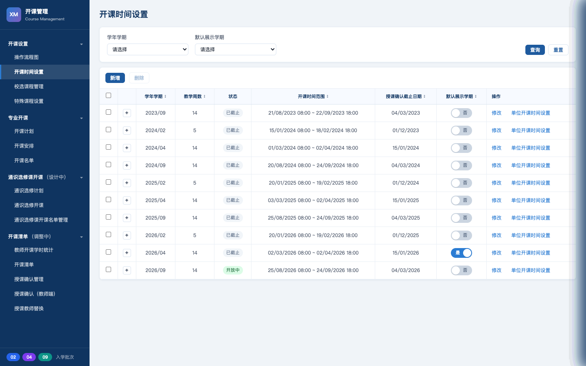
图：系统主界面 — 开课管理模块
快速入门
以下是一个完整学期的开课操作主流程：
(维护GE/ME主数据)→ 3. 特殊课程设置
(课号级默认)→ 4. 开课计划
(生成→合班→生效)→ 5. 开课安排
(三步→生效)→ 6. 开课名单
(分配→保存)
关键依赖：第4步"生成开课任务"必须在第1步设置「默认展示学期=是」之后操作。第5步"开课安排"只有在第4步"开课计划"生效后才能看到对应教学班。第6步"开课名单"只有在第5步"开课安排"生效后才能维护。
1. 开课时间设置
菜单位置：开课管理 → 开课设置 → 开课时间设置
适用角色：教务管理员
目的：按学年学期配置开课操作时间窗口，作为专业开课等下游模块的前置条件。
1.1 主要功能
| 功能 | 说明 |
|---|---|
| 查询 / 重置 | 按学年学期、默认展示学期过滤列表 |
| 新增 | 为尚未配置的学期新增开课时间（选择学年学期 → 设置开始/截止时间） |
| 修改 | 修改全校开课窗口、授课确认截止日期、备注信息 |
| 删除 | 批量删除学期配置（确认后不可撤销） |
| 默认展示学期开关 | 在列表中切换"是/否"，全局仅允许一个"是"（排他），下游模块依赖此项 |
| 单位开课时间设置 | 展开行内区域，为各学院配置独立的开课时间（有配置时覆盖全校时间，否则继承） |
1.2 字段说明（修改弹窗）
| 字段 | 类型 | 必填 | 说明 |
|---|---|---|---|
| 学年学期 | 只读 | — | 附教学周提示 |
| 开课开始 | 日期时间 | 是 | 须早于截止，格式 dd/mm/yyyy HH:mm |
| 开课截止 | 日期时间 | 是 | 须晚于开始；超出校历结束日可确认后保存 |
| 授课确认截止日期 | 日期 | 否 | 仅日期；可设已过期日期；供教师确认函引用 |
| 备注 | 文本 | 否 | 最长200字 |
1.3 业务规则
- 教学周数由学期类型固定推导：2月短学期=5周，4/9月长学期=14周（不在本页手工维护）
- 状态由截止时间相对当前时刻判定：开放中 / 已截止
- 单位覆盖：单位有独立起止时间时，该单位开课操作窗口以单位配置为准；未配置则继承全校时间
- 默认展示学期下游"开课计划"生成开课任务前须存在至少一个"是"
图1a：开课时间设置 — 主列表
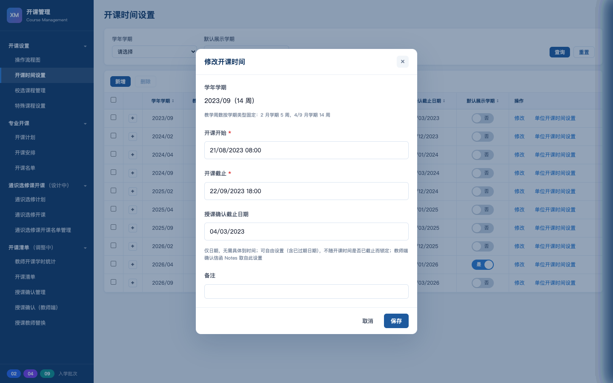
图1b：开课时间设置 — 修改弹窗
2. 校选课程管理
菜单位置：开课管理 → 开课设置 → 校选课程管理
适用角色：教务管理员
目的：维护校选课程（GE通识选修 + ME专业选修类校选）主数据池，作为通识选修开课的候选课库与默认值来源。
2.1 主要功能
| 功能 | 说明 |
|---|---|
| 查询 / 清除过滤 | 按课程管理单位、类型(GE/ME)、校选课类别、状态、课程代码/名称过滤 |
| 新增 ME | 从课库勾选Major Elective纳入校选池（不可直接新增GE，GE由Restrictions List同步进入） |
| 批量改状态 | 批量改为正常 / 停课 |
| 删除 | 删除校选池记录（不影响教务课库） |
| 查看修读范围 | 只读弹窗查看课程的修读范围（专业、学生类型、年级学期、冲突/先修课程） |
| 设置修读范围 | 抽屉维护可选/不可选专业、学生类型、年级学期、冲突与先修课程 |
| 修改开课默认信息 | 抽屉维护Support历史、状态、教学开关、备注 |
2.2 修读范围字段
| 字段 | 类型 | 说明 |
|---|---|---|
| 修读范围（专业） | 摘要+选择 | 可选与不可选互斥；两边都不选=全开放 |
| 可选学生类型 | 多选 | Local / Chinese / International，至少1种 |
| 不可选年级学期 | 多选网格 | Y1-Y4 + S1-S3；空=均可选 |
| 冲突课程 | 多选 | 校选课库中与本节冲突的课程；已修不可再选 |
| 先修课程 | 多选 | 课库+校选中需先修完的课程 |
2.3 开课默认信息字段
| 字段 | 类型 | 默认值 | 说明 |
|---|---|---|---|
| Support 历史 | 下拉 Y/N | N | 必填 |
| 状态 | 下拉 | 正常 | 必填；停课课不可被选入通识开课计划 |
| 是否排课 | 下拉 是/否 | 是 | 必填 |
| 是否排场地 | 下拉 是/否 | 是 | 必填 |
| 是否考勤（预留） | 下拉 是/否 | 是 | 必填 |
| 是否录入成绩（预留） | 下拉 是/否 | 是 | 必填 |
| 是否排考（预留） | 下拉 是/否 | 是 | 必填 |
| 备注信息 | 多行文本 | — | 选填 |
2.4 业务规则
- GE类别自动推断：G01/G1x → Arts; G02/G2x → Business; G03/G3x → Science; 其余 → Unrestricted
- 停课课不可被选入通识开课计划
- 状态流转：正常 ↔ 停课；正常可删除移出校选池
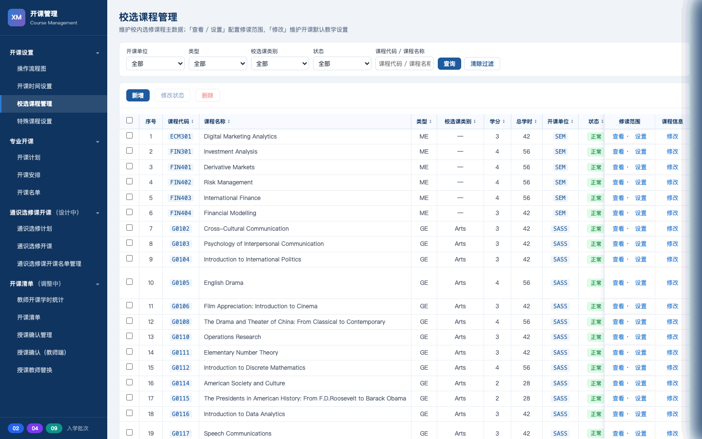
图2a：校选课程管理 — 主列表
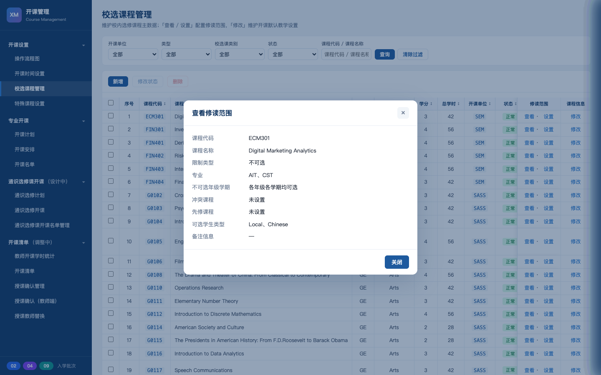
图2b：校选课程管理 — 查看修读范围弹窗
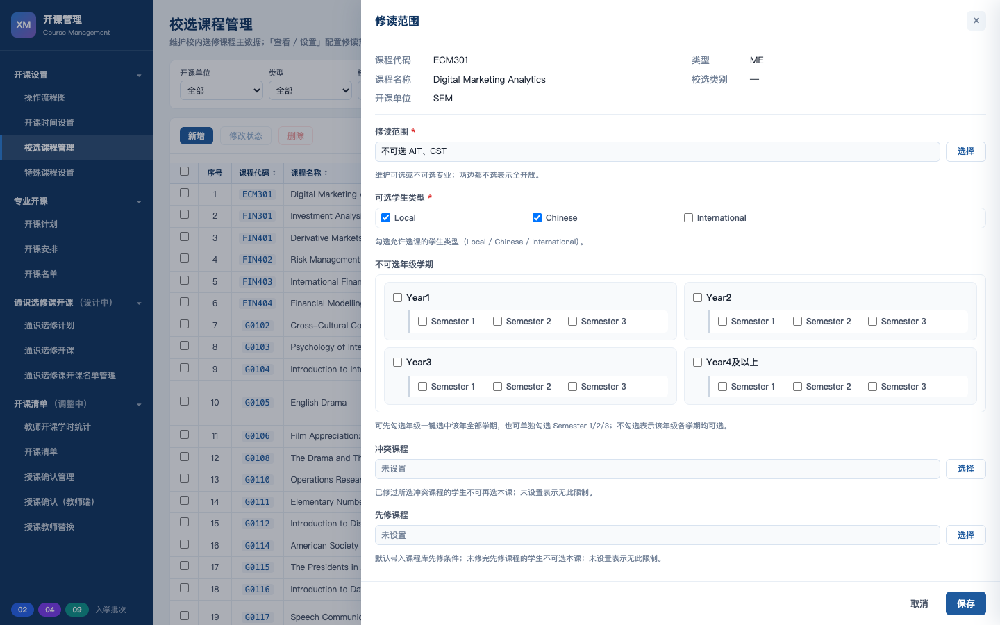
图2c：校选课程管理 — 设置修读范围抽屉
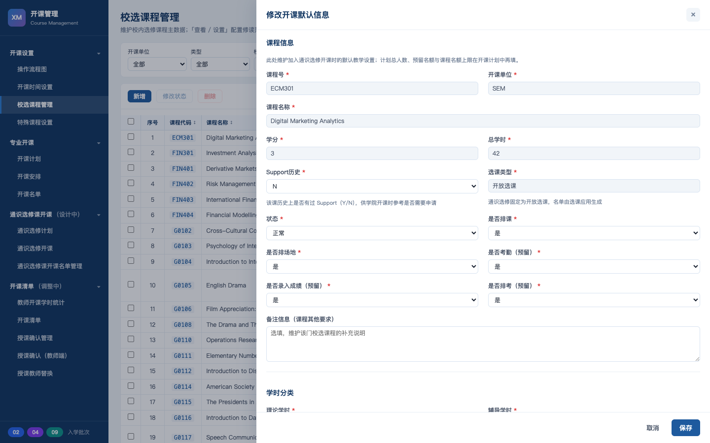
图2d：校选课程管理 — 修改开课默认信息抽屉
3. 特殊课程设置
菜单位置：开课管理 → 开课设置 → 特殊课程设置
适用角色：教务管理员
目的：提供课号级默认配置（教室属性/偏好、默认Support学院、Support历史），供专业开课安排新建教学班时自动带出。
3.1 主要功能
| 功能 | 说明 |
|---|---|
| 查询 / 清除过滤 | 按开课单位、课程号过滤 |
| 添加课程 | 从教务课程库勾选纳入特殊设置清单 |
| 编辑 | 行操作→抽屉维护教室/Support/历史 |
| 删除 | 多选删除（不回滚已落班数据） |
3.2 编辑抽屉字段
| 区块 | 字段 | 类型 | 说明 |
|---|---|---|---|
| 课程信息 | 课程代码 / 开课单位 / 课程名称 | 只读 | — |
| 教室信息(默认) | 教室属性 | 下拉 | 四学时各自的属性：普通教室 / 计算机教室 / 专业教室；默认普通教室 |
| 参考教室偏好 | 多选 | 选填 | |
| Support(默认) | Support 历史 | 下拉 Y/N | 课号级；未纳入视为N |
| 默认 Support 学院 | 多选 | 排除本开课单位 |
3.3 写入规则
- 新建教学班时可全量拷贝教室默认和Support默认
- 打开编辑抽屉时仅当字段仍为系统默认值时补全（不覆盖已手工修改的值）
- Support历史始终按课号同步展示
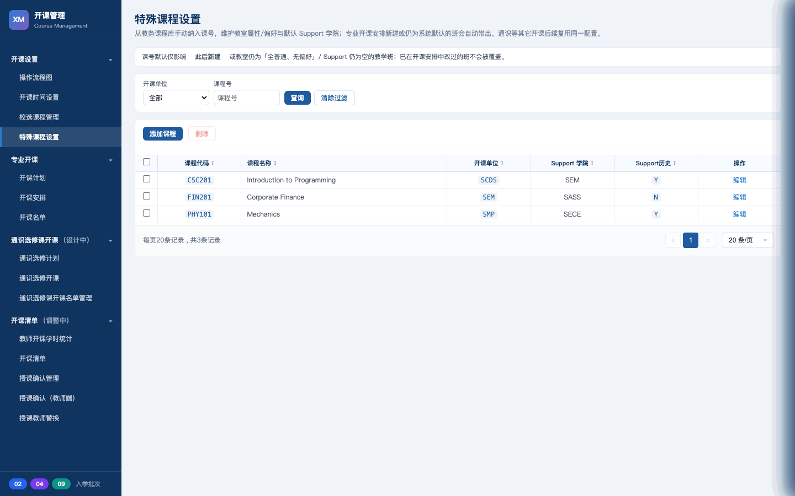
图3a：特殊课程设置 — 主列表
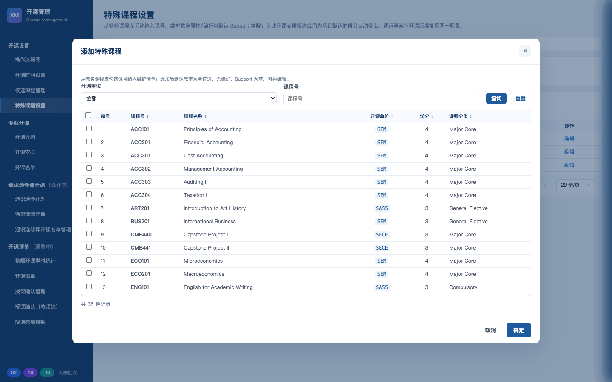
图3b：特殊课程设置 — 添加课程弹窗
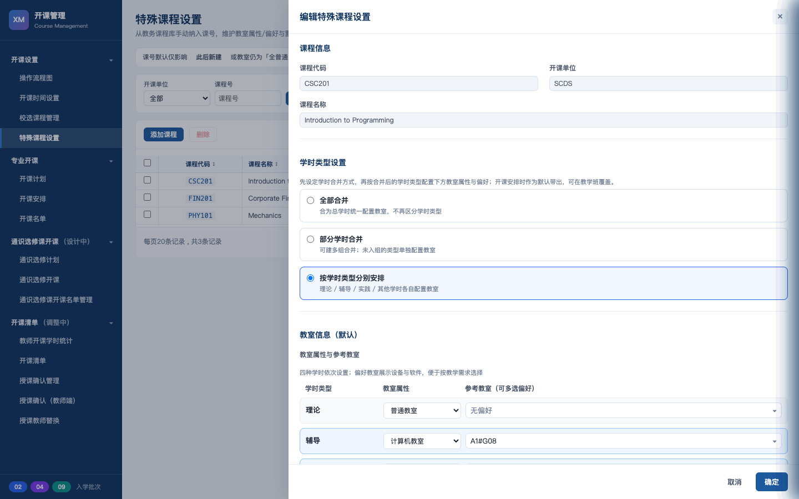
图3c：特殊课程设置 — 编辑抽屉
4. 开课计划
菜单位置：开课管理 → 专业开课 → 开课计划
适用角色：教务管理员、学院教务
目的：从已锁定的培养方案执行计划生成学期开课任务，维护教学任务基础信息与合班，批量生效后进入开课安排。
粒度：1门课 × 1个专业 × 1个入学批次 = 1条计划行（默认各自生成独立教学班）
4.1 主要功能
| 功能 | 说明 | 操作入口 |
|---|---|---|
| 生成开课任务 | 弹窗从已锁定执行计划选未开课专业课生成计划 | 工具栏 → 生成开课任务 |
| 修改教学任务 | 抽屉维护选课类型、周次、开关、教室等 | 列表 → 课程信息 |
| 合班 | 合并同课多专业批次（仅未生效草稿可用） | 操作列 → 合班 |
| 一键合班 | 工具栏按规则合并未生效草稿（不与已生效班合并） | 工具栏 |
| 生效 | 批量将计划生效，进入开课安排 | 工具栏 → 生效 |
| 删除 | 删除计划行及关联班/名单（仅非已生效可删） | 工具栏 → 删除 |
| 预置人数 | 查看学生预置人数（只读） | 列点击 |
| 操作记录 | 查看字段变更历史 | 列点击 |
4.2 状态流转
- 草稿：不可进入开课安排列表
- 已生效：出现在开课安排，可进入下游
- 回退：可修改后再生效；合班保留（需手动拆班）
- 删除仅限草稿或回退状态
4.3 合班前提（须同时满足）
- 同开课学期、同课程号
- 学分、总学时、起止周、教学周数一致
- 教学任务开关一致（选课类型、是否排课/排场地/考勤/录入成绩/排考）
- 计划页仅未生效可合
人数/预留累加；清空分组、教师安排、场地类型与教室安排偏好；关联的任务安排重置为草稿。
4.4 修改教学任务 关键字段
| 字段 | 编辑性 | 说明 |
|---|---|---|
| 起止周 | 可编辑 | 打开"设置起止周"弹窗（支持全部/单周/双周/全不选模式）；保存后不被学期默认覆盖 |
| 计划总人数 | 条件可编 | 开放选课时手动填写；不开放选课+老生=预置人数（只读）；不开放选课+新生=招生计划（只读） |
| 预留名额 | 可编辑 | 默认5，可改，计入名额上限 |
| 选课类型 | 可编辑 | 默认"不开放选课" |
| 是否排课/排场地/考勤/录入成绩/排考 | 可编辑 | 排场地/考勤默认随学时（全为0→否，否则→是）；排课/录入成绩/排考默认"是" |
| 教室属性 / 参考教室 | 可编辑 | 四学时各行独立设置（普通/计算机/专业教室） |
| Support历史 | 只读 | 始终取自特殊课程设置 |
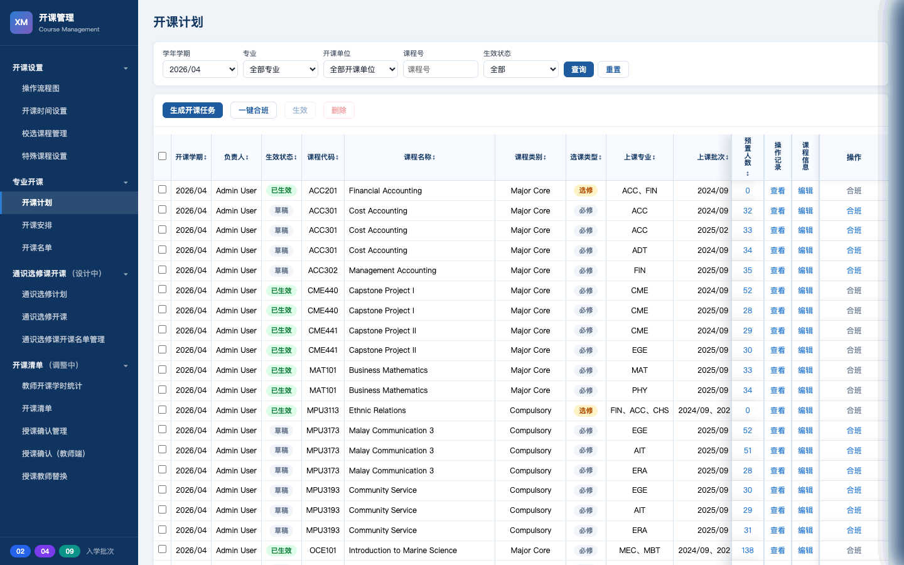
图4a：开课计划 — 主列表
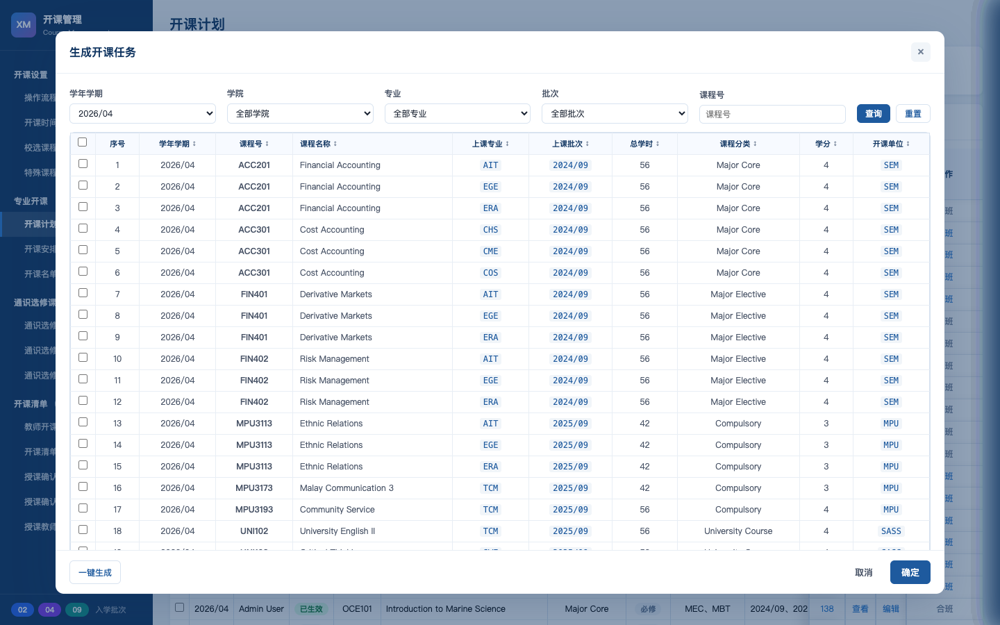
图4b：开课计划 — 生成开课任务弹窗
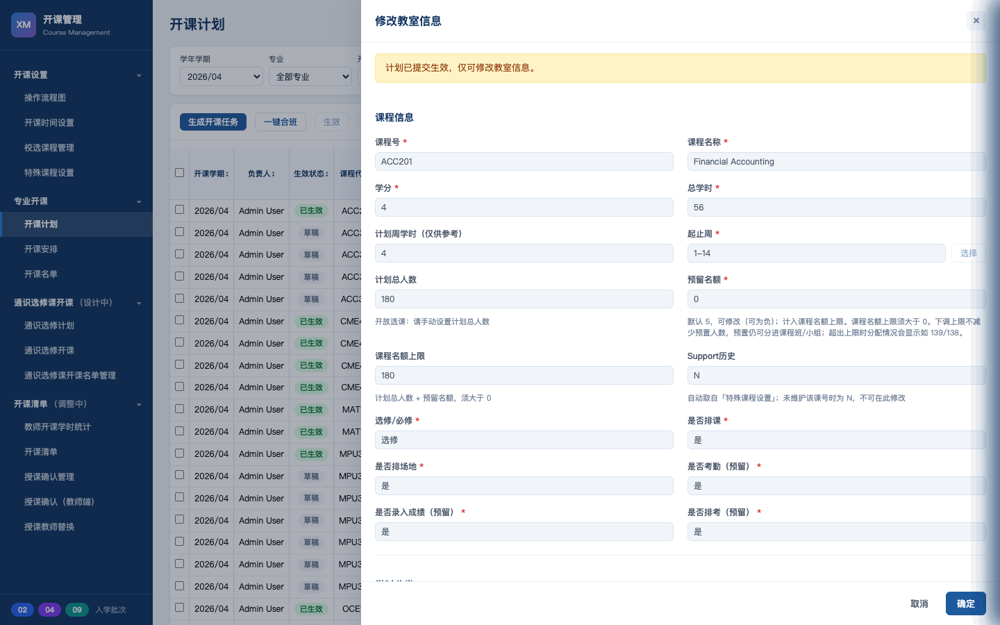
图4c：开课计划 — 修改教学任务抽屉
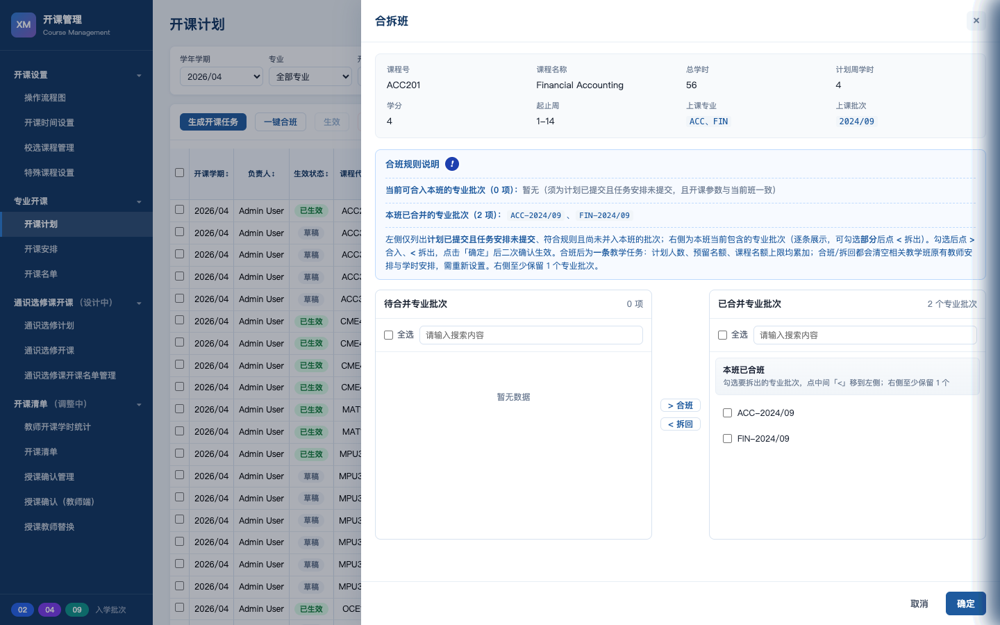
图4d：开课计划 — 合班穿梭抽屉
5. 开课安排
菜单位置：开课管理 → 专业开课 → 开课安排
适用角色：教务管理员、学院教务、教师
目的：对计划已生效的教学班，分三步完成开课前期设置、课程班（合班/Support）、师资安排（教师/授课确认/共同授课），再批量生效进入开课名单。
开课前期设置
课程基础信息（含教室等）
行操作："设置"
课程班
合班 · Support管理
行操作："合班" / "Support管理"
师资安排
安排教师 · 授课确认 · 共同授课
行操作："安排教师" / "共同授课" / "授课确认"
- 分组结构与学时投递无致命错误
- 分组人数上限合计 ≥ 计划总人数 且 ≤ 课程人数上限
- 全部授课教师已确认（含代确认）；无教师不可生效
- 学时投递合计不足 → 警示（确认后仍可生效）；超过 → 二次确认后可生效
5.1 步骤一：开课前期设置
点击行操作「设置」→ 打开"修改教学任务"抽屉，与开课计划共用同一套抽屉字段。在计划已生效且任务未生效时，主要可修改教室相关信息。
5.2 步骤二：课程班（合班 / Support）
合班
点击「合班」→ 打开合拆班穿梭抽屉，将待合并的专业批次移动到右侧已合并区。合班前提和副作用与开课计划一致。
Support 管理
点击「Support 管理」→ 弹窗维护Support学院（多选，不可选本开课单位），历史只读提示。
5.3 步骤三：师资安排
安排教师 → 进入分组工作台
分组工作台是沉浸式页面，左侧为分组信息：
- 分组信息区：计划人数、课程人数上限、专业批次、Coordinator
- 分组树：课程班名称 → 小组名称（可编辑）→ 人数上限 → 备注说明
- 工具栏：分组（按组数/按人数）、重置、学时类型设置（全部合并/部分合并/分别安排）、复制（从历史学期）、安排教师
右侧有「课程班/小组学时详情」和「学生名单」两个Tab。在学时详情中配置各组的学时类型(L/T/P/O)、周次、周学时、教师、教室属性等。
授课确认
在步骤三点击「授课确认管理」→ 弹窗查看各教师确认进度，可代确认（选择"同意"或"不同意+需求反馈"）。
共同授课
点击「共同授课」→ 弹窗左侧已设置表/右侧可选表，添加共享教师的课号。
撤回 vs 退回
| 操作 | 计划状态 | 任务状态 | 合班 | 分组/教师 | 学生名单分组 |
|---|---|---|---|---|---|
| 撤回 | 仍为已生效 | → 草稿 | 保留 | 保留 | 重置 |
| 退回 (至计划) | → 回退 | 清空 | 保留 (不自动拆) | 清空 | 清空 |
| 名单页 退回安排 | 仍为已生效 | → 草稿 | 保留 | 可再改 | 名单可保留 |
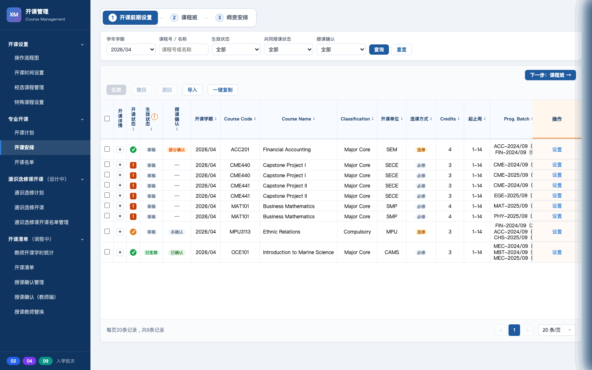
图5a：开课安排 — 主列表
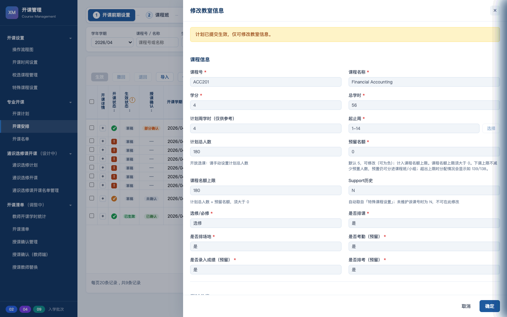
图5b：开课安排 — 设置抽屉（修改教学任务）
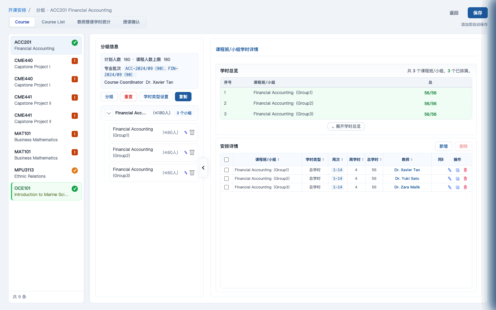
图5c：开课安排 — 分组工作台（步骤三·安排教师/学时/分组）
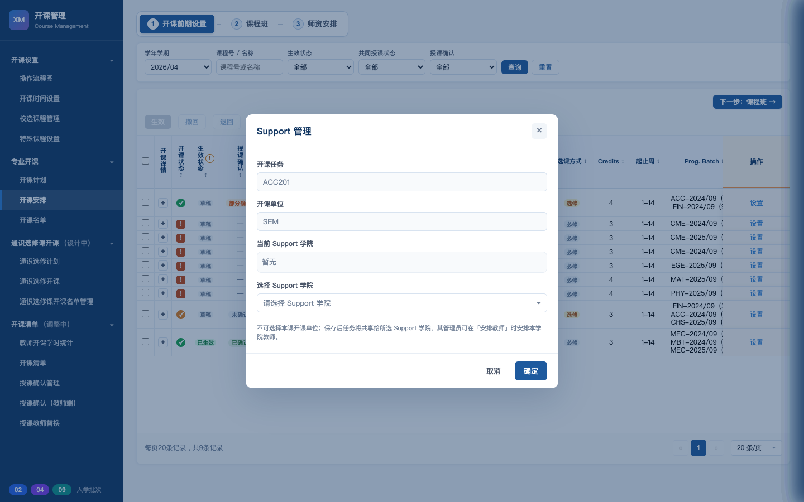
图5d：开课安排 — Support管理弹窗
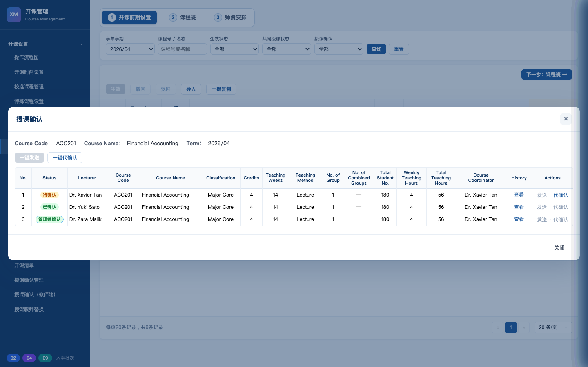
图5e：开课安排 — 授课确认管理弹窗
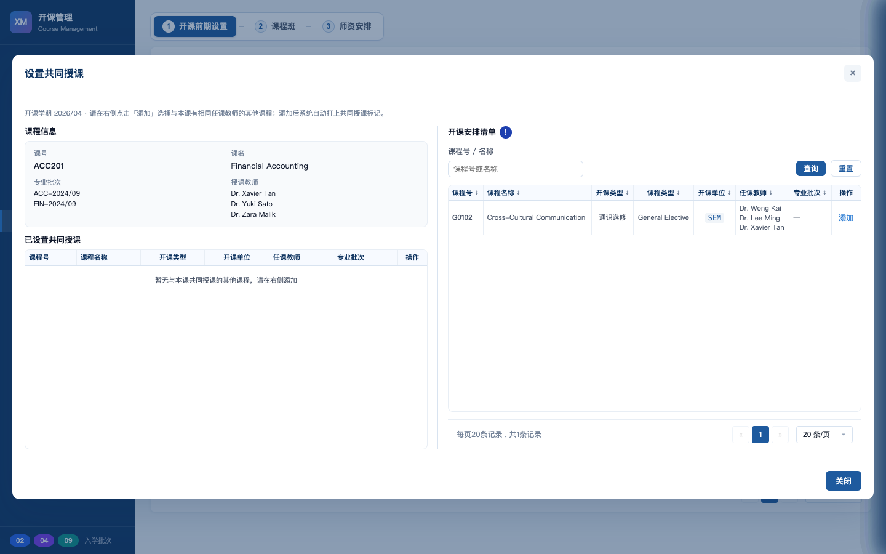
图5f：开课安排 — 共同授课弹窗
6. 开课名单
菜单位置：开课管理 → 专业开课 → 开课名单
适用角色：教务管理员、学院教务
目的：在任务安排已生效后，按开课任务维护各小组学生名单。
可见条件：计划已生效 且 任务安排已生效。
6.1 主要功能
| 功能 | 说明 | 操作入口 |
|---|---|---|
| 管理名单 | 进入分组工作台"学生名单"Tab | 行操作 |
| 一键分配 | 按规则（国籍类型/专业/intake/性别）批量入组 | 工作台工具栏 |
| 预置名单 | 从预置可修名单分配学生到小组 | 工作台工具栏 |
| 添加学生 | 手工加入（受组容量约束） | 工作台工具栏 |
| 调整分组 | 学生调组 | 工作台工具栏 |
| 移除 | 移出名单（保留移除记录） | 工作台工具栏 |
| 保存名单 | 保存当前维护结果 | 工作台工具栏 |
| 退回 | 批量退回至开课安排（名单可保留，须填写退回说明） | 列表工具栏 |
6.2 一键分配规则
| 场景 | 行为 |
|---|---|
| 无特殊分组 | 按专业 + intake匹配，批量导入课程班名单 |
| 已拆平行小组 | 配置规则后分配 — 维度含国籍类型/专业/intake/性别；模式含等比例/按顺序/唯一值；多维按优先级 |
6.3 业务规则
- 实际人数不超过小组上限；不改变计划人数/名额上限（老生场景）
- 新生批次暂无预置名单时，以招生计划为计划人数口径
- 开放选课课程默认名单来自选课应用
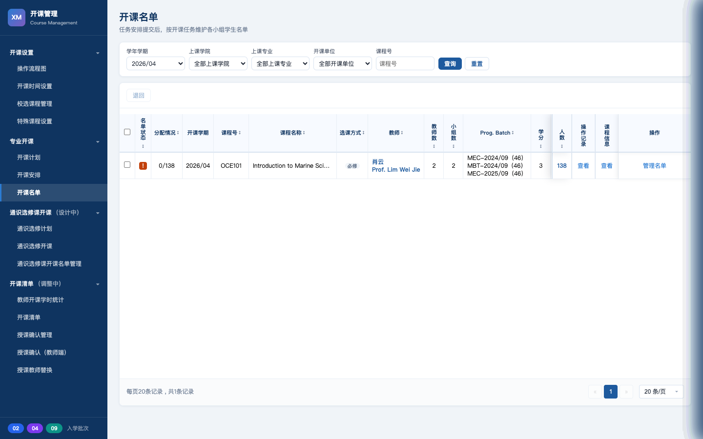
图6a：开课名单 — 主列表
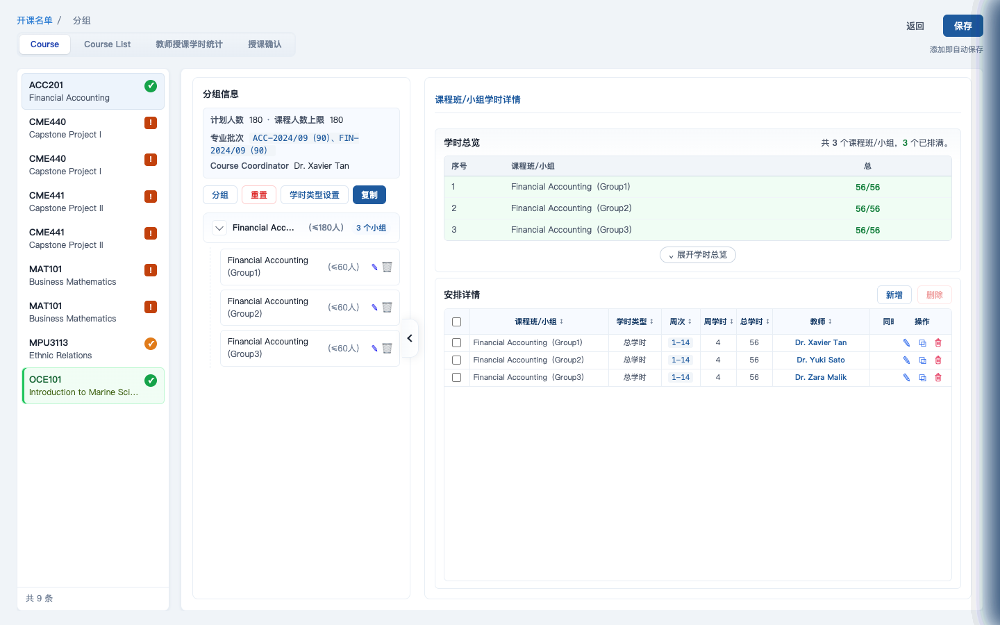
图6b：开课名单 — 管理名单（分组工作台·学生名单Tab）
7. 通识选修课开课
状态：设计中
本模块功能与专业开课类似，但针对通识选修课（GE）场景。包含三个子页面：
- 通识选修计划：上段展示各学院需修GE的专业批次与人数，下段AC定各学院需开课程班/小组数（下限），学院可超额
- 通识选修开课：计划+安排合表，三步引导（课程班 → 其他学院Support → 师资安排）
- 通识选修课开课名单管理：开放选课，默认名单由选课应用生成，支持移除与手动添加
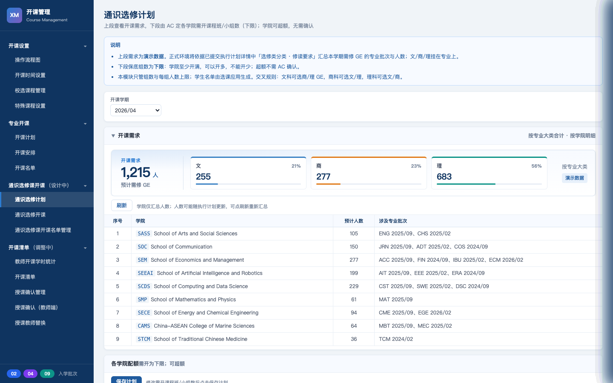
图7a：通识选修计划页面
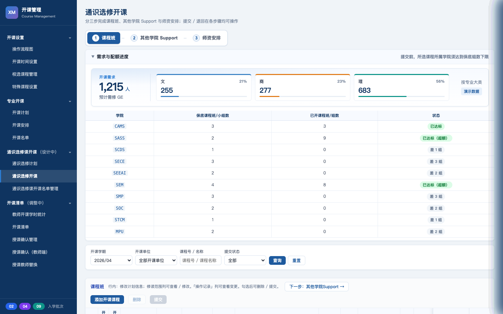
图7b：通识选修开课页面
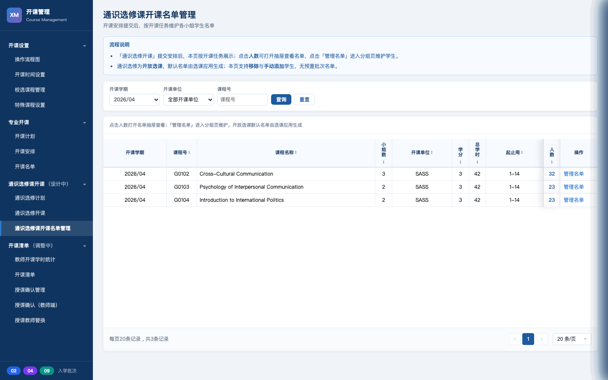
图7c：通识选修课开课名单管理页面
8. 开课清单
8.1 教师开课学时统计
菜单位置：开课管理 → 开课清单 → 教师开课学时统计
目的：按教师横向展示各学期授课学时（周学时×周次），支持三种统计维度。
| 统计维度 | 说明 |
|---|---|
| 按周次 | 按教学周展示教师每周学时分布 |
| 按学期 | 按学期汇总教师总授课学时 |
| 按学年 | 按学年汇总，可开启"本学期计入"开关 |
工具栏：超限阈值设置（设定教师学时上限阈值）、导出
8.2 开课清单
菜单位置：开课管理 → 开课清单 → 开课清单
目的：自动汇总专业与通识选修开课流程中任务安排已提交的数据。
| 筛选 | 开课学期、开课类型(专业开课/通识选修)、开课单位、课程号/课程名称 |
|---|---|
| 列表 | 负责人、开课学期、开课类型、课程号、课程名称、开课单位、选课类型、学分、小组数、起止周、总学时、课程人数上限、当前学生名单人数、任课教师 |
8.3 授课确认管理
菜单位置：开课管理 → 开课清单 → 授课确认管理
目的：按教师维度下发系统内授课确认；支持教务端代确认。
另设授课确认（教师端）页面，教师在系统内确认本学期授课安排（同意/不同意+需求反馈），或查看教务下发的确认函。
8.4 授课教师替换
菜单位置：开课管理 → 开课清单 → 授课教师替换
目的：对已生效开课进行整行教师替换（不改起止周、学时类型与学时）。
| Tab | 说明 |
|---|---|
| 教师替换 | 选择课程→查看明细（课程班/小组、学时类型、起止周、周学时、总学时、教师、同时授课）→替换教师 |
| 替换记录 | 查看历史上所有替换操作的记录 |
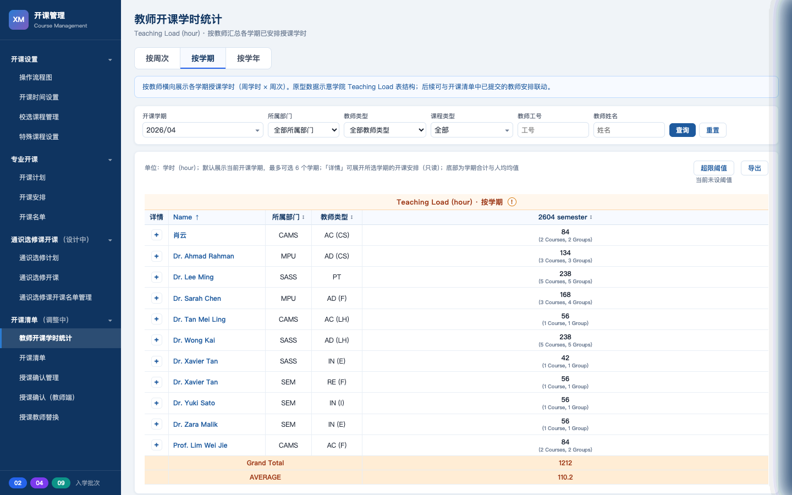
图8a：教师开课学时统计页面
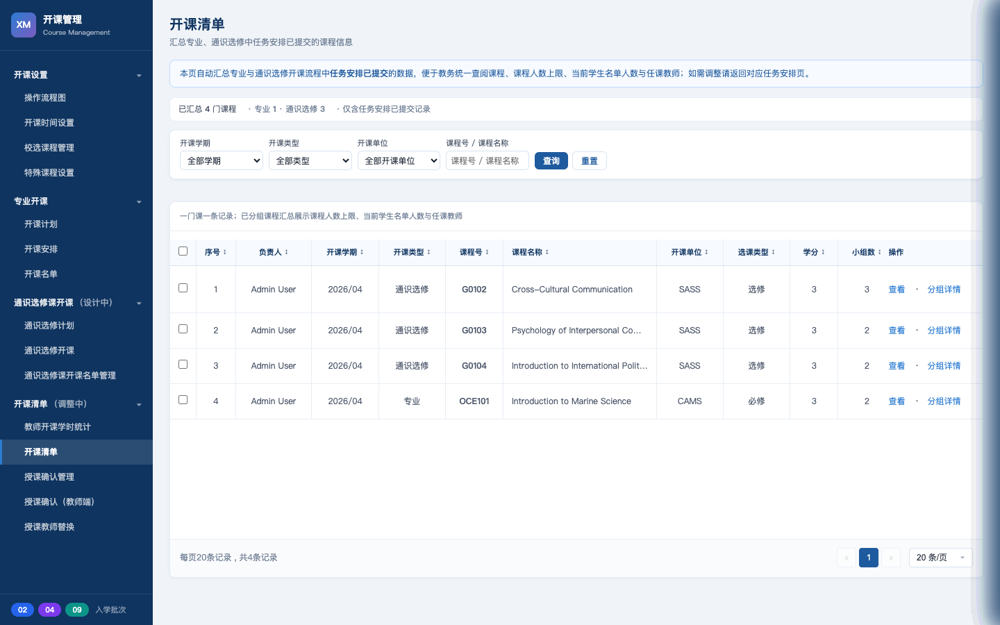
图8b：开课清单页面
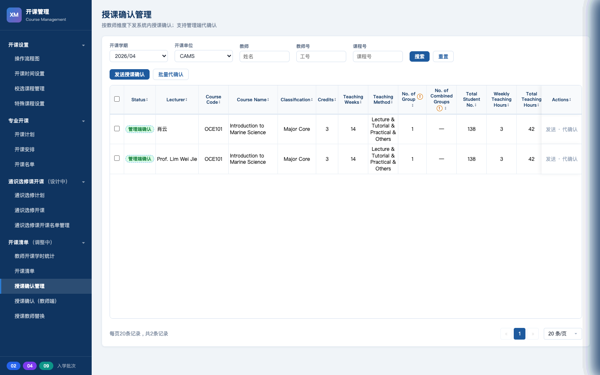
图8c：授课确认管理页面（管理端）
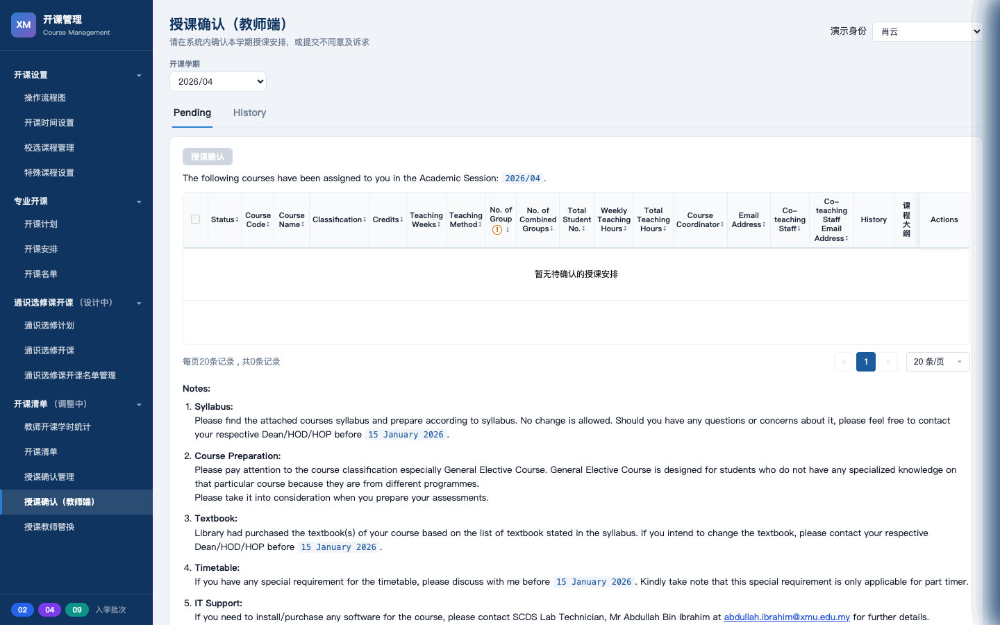
图8d：授课确认页面（教师端）
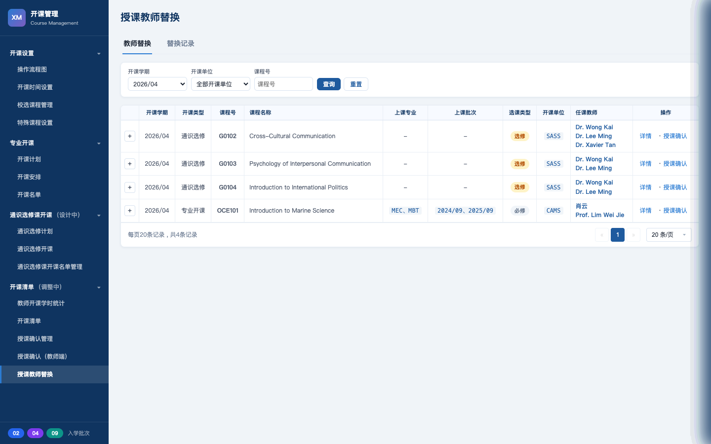
图8e：授课教师替换 — 主列表
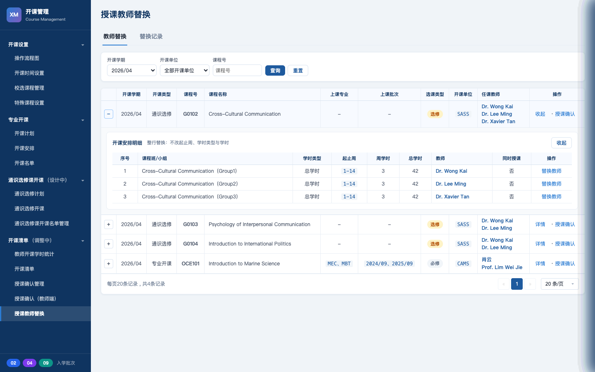
图8f：授课教师替换 — 详情展开
业务流程总览
完整开课数据流
(窗口、默认学期) ↓ 培养方案执行计划
(已锁定) + 特殊课程设置
(教室/Support默认) ↓ 开课计划
(生成→合班→生效) ↓ 开课安排
(三步→生效) ↓ 开课名单
(分配→保存) ↓ 开课清单 / 排课 / 选课 / 考勤
(下游消费)
状态与角色矩阵
| 阶段 | 负责角色 | 核心操作 | 结果 |
|---|---|---|---|
| 开课设置 | 教务 | 设置时间窗口、维护校选/特殊课程 | 就绪可生成 |
| 开课计划 | 教务/学院 | 生成→编辑→合班→生效 | 计划已生效 |
| 开课安排·步骤1 | 教务 | 设置教室信息等 | 基础信息就绪 |
| 开课安排·步骤2 | 教务 | 合班/Support | 课程班就绪 |
| 开课安排·步骤3 | 学院/教师 | 分组、安排教师、授课确认 | 师资就绪 |
| 开课安排·生效 | 教务 | 校验门槛→生效 | 任务已生效 |
| 开课名单 | 教务 | 一键分配/预置/手工→保存 | 名单就绪 |
常见问题
Q：生成开课任务时提示"未设置默认展示学期"怎么办？
A：请先前往 开课管理 → 开课设置 → 开课时间设置，找到目标学期，将"默认展示学期"开关切换为"是"。全局仅允许一个"是"。
Q：为什么在开课安排中看不到某条开课记录？
A：请确认该条记录在开课计划中的生效状态为已生效。草稿或回退状态的计划不会出现在开课安排列表中。
Q：已生效的计划能否删除？
A：不能直接删除。需先从"开课安排"页面对该任务点击「退回」（填写退回说明），计划状态变为回退后，再回到开课计划页删除。注意：退回会清空分组和教师数据，合班会保留（需手动拆班）。
Q：合班后人数怎么算？
A：合并后各批次的人数/预留名额会累加到合班。但分组、教师安排、场地类型偏好会被清空，需重新配置。任务安排状态也会重置为草稿。
Q："撤回"和"退回"有什么区别？
A：撤回：任务回到草稿，但合班/分组/教师全部保留，仅学生小组分配被重置。退回（至计划）：计划状态变为回退，清空分组/教师，合班保留但不自动拆（需手动）。已生效任务不可退回。
Q：授课教师还没确认怎么办？
A：任务生效的门槛之一是"全部授课教师已确认"。可在步骤三点击「授课确认管理」进行代确认（教务端操作），或通知教师登录教师端页面自行确认。
Q：计划总人数可以修改吗？
A：取决于选课类型——开放选课时可以手动编辑计划总人数；不开放选课时，老生显示预置可修人数（只读），新生显示招生计划人数（只读）。可在"修改教学任务"抽屉中查看和修改。
Q：通识选修课（GE）开课怎么操作？
A：通识选修课开课模块目前仍在设计中。当前需使用"校选课程管理"维护GE/ME主数据池后，通过专业开课流程（开课计划→开课安排→开课名单）的扩展路径处理。详细流程待正式发布。
如遇到本手册未覆盖的问题，请联系系统管理员或查看对应子模块的PRD需求文档。各模块PRD存放在 prototype/参考文档/2、开课管理/ 目录下。